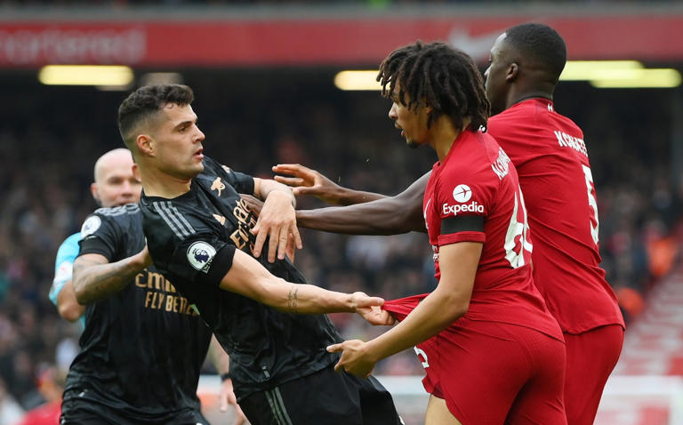

Arsenal make Liverpool angry in thriller to hand Man City title-race advantage
Arsenal committed the fatal mistake of making Liverpool angry and, with it, handed the advantage in the Premier League title race to Manchester City. The turning point, in an extraordinary encounter which may have serious repercussions for assistant referee Constantine Hatzidakis who amazingly stands accused of elbowing Andrew Robertson, came not with the goals but with an incident when Arsenal were 2-0 up and in complete control. Needlessly, Granit Xhaka clashed with Trent Alexander-Arnold off-the-ball and while both players were cautioned by referee Paul Tierney it was certainly a card worth taking for the Liverpool full-back. Xhaka did not need to bump into him to provoke him and yet the midfielder did just that and, with it, the Liverpool players and – crucially – the home fans were riled. Until that point they had appeared traumatised but, after it, their blood was up and in a stadium which runs on emotion arguably more than any other the feelings were raw. How Liverpool exploited them. “I think a little bit of fire in a game like that there’s nothing wrong with it,” Alexander-Arnold later said. “He nudged me off the ball so it’s a natural reaction to do it back. It got the crowd going.”
It certainly did. How sweet it ultimately proved for Alexander-Arnold who had been run ragged by Gabriel Martinelli in an horrific first half-hour for Liverpool but who nutmegged Oleksandr Zinchenko to stand up the delicious cross from which substitute Roberto Firmino headed a thoroughly deserved late equalising goal. It could have been worse for Arsenal. It could – it should – have been a defeat but in a contest that, at times, appeared to be Mohamed Salah against Aaron Ramsdale it was the Arsenal goalkeeper who came out on top with an outstanding performance. He was beaten by Salah from close-range but the forward missed from the penalty spot and was also denied, in injury-time, by an superb finger-tip save from the England international. How vital will that prove? How important was Liverpool’s wastefulness? They had 19 shots from inside the Arsenal penalty area, the most they have faced in a Premier League match, and an XG (expected goals) of 3.96 but did not win. They even could have had a second penalty when Salah appeared to be tugged back, also in added time. A point at Anfield should be a positive for Arsenal. After all, despite Liverpool’s troubles this season they have only lost here once in their past 37 league games and Mikel Arteta had understandably described the stadium as a “jungle” for away teams. Danger can come from unforeseen places – although Xhaka’s part in it, despite his excellent campaign, was pretty predictable. Less so was Hatzidakis raising his elbow and apparently catching Andrew Robertson in the throat with the Liverpool defender booked by Tierney for his protests. That came on half-time and the rage did not subside in a second-half dominated by Liverpool even if Arsenal will argue they had the breakaways to add to their two goals. “We didn’t continue to play,” lamented Arteta while declaring this had added to the “chaos” that Liverpool thrive on. It must be remembered Arsenal are still a young team, a team no-one predicted would be in this position at the start of the season, but if this was a rite of passage game then it left a few questions. The Xhaka episode was not the first time Arsenal have provoked Anfield under Arteta and there was further annoyance at the frequency of players going down for treatment. Only last season the manager himself clashed with Jurgen Klopp after claiming Sadio Mane had elbowed defender Takehiro Tomiyasu and had to be dragged away in a game that was goalless but ended in a 4-0 defeat. Was a lesson not learned there? Arsenal have made huge strides since then and it should not be overlooked that this result stretched their lead at the top to six points. But having played a game more than City and with away fixtures at the Etihad and Newcastle United to come it felt like they let a significant opportunity slip away. What a contrast to the opening period when there was almost an arrogant swagger to Arsenal with Martin Odegaard running the midfield and the Brazilians Martinelli and Gabriel Jesus both scoring. It seemed the story would be about another defensive shambles from Liverpool with yet more doubt cast on Virgil Van Dijk while both full-backs were remorselessly targeted. At half-time Sky pundit Roy Keane declared Liverpool had defended like a “pub team” and for once the over-wrought language was accurate and it looked like Arsenal were striding towards their first title since 2003-04. Win and they were undeniably favourites; lose and it would swing towards City. Draw? It still felt like a movement in the direction of the champions. “At 2-0 we had the game in our hands,” Arteta said and that was undeniable. But maybe it was more than the game; maybe it was the league also. Salah’s predatory strike, just before half-time, fuelled the fire. It meant Liverpool’s comeback was not just based on hope and fury while it sowed a seed of doubt that Arsenal could not banish. By the time they kick off away to West Ham United next Sunday a lead that looked like being stretched to eight points could be down to three as City play Leicester City the day before. Their destiny is still theirs to control but, after this result, City can also say that about themselves.